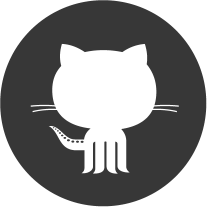

<div class="outer">
    <div class="middle">
        <div class="inner">

            

            <h1 id="name">Apoorv Kothari </h1>

            <div id="title">
              <div class="title-item">Software Engineer</div>
              <div class="title-div"> | </div>
              <div class="title-item">Entrepreneur</div>
            </div>

            <div id="description-wrapper">

              <div class="description">
                 I am a software engineer, with a focus on distributed and highly-available and scalable solutions. My technology of choice is <span class="red">Scala</span> for its terse but powerful syntax and functional paradigms. I have done alot of work on the <span class="red">Android</span> and appreciate the the mature and beautiful ecosystem it has become.
              </div>

              <div class="description">
                As a developer I have brought many products to market, with some apps getting many thousands of installs. Having been involved in diverse set of roles, (BE, mobile, FE, and embedded technology) I place value in maintainable code, scaling, security, and UX/design.
              </div>

              <br>
              <div class="description">
                <span class="under">Currently working on:</span><br>
                I am co-founder at <a href="http://wilfredbot.com">wilfredbot</a>, a slack bot for managers to request anonymous feedback from your employees.
              </div>

              <br><br>
              <div class="description">
                <span class="under">Things I grok:</span><br>
                scala, android, java, docker, aws<br>
                squash, biking, fencing, travel, cooking.
              </div>

            </div>

            <div id="link-wrapper">
              <a class="link-icon" href="http://www.speakerdeck.com/toidiu" target="_blank">
                  
                  <span class="icon-description">talks</span >
              </a>
              <a class="link-icon" href="http://www.github.com/toidiu" target="_blank">
                  
                  <span class="icon-description">github</span >
              </a>
              <a class="link-icon" href="https://www.linkedin.com/in/toidiu" target="_blank">
                  
                  <span class="icon-description">linkedin</span >
              </a>
              <a class="link-icon" href="mailto:toidiu@protonmail.com" target="_blank">
                  
                  <span class="icon-description">e-mail</span >
              </a>
            </div>

        </div>
    </div>
</div>


